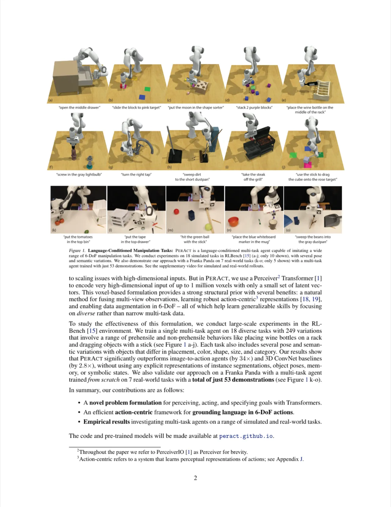
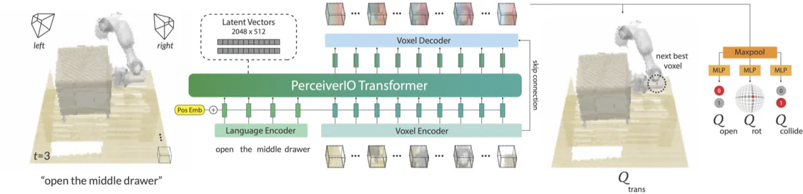
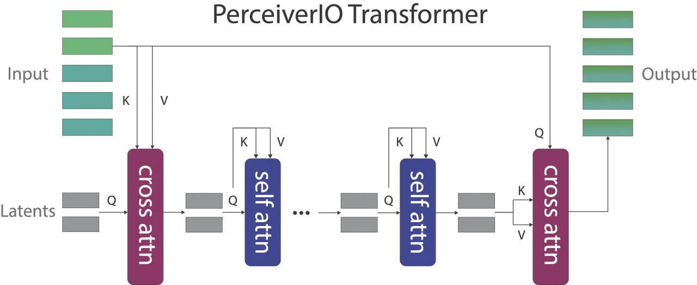
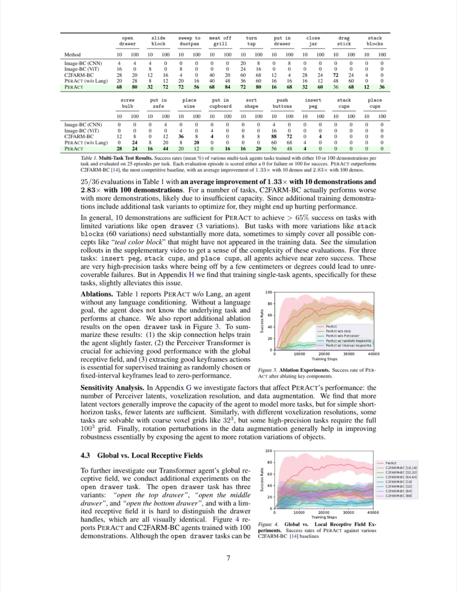

PerAct 是一个语言条件化的 behavior cloning agent，采用 Perceiver Transformer 对体素化 RGB-D 场景与自然语言目标进行联合编码，通过检测"下一个最优体素动作（next best voxel action）"输出离散化的 6-DoF 末端执行器姿态。单一多任务模型在 RLBench 18 个任务（249 种变体）上仅用少量演示训练，性能大幅超越 image-based 基线（+34x）和 3D ConvNet 基线（+2.8x）。
机器人操作任务需要对多样化的物体、空间位置和语言指令进行泛化——而现有方法要么依赖目标物体的显式检测与位姿估计，要么只能处理 2D 图像输入，难以有效利用 3D 空间结构先验。如何用单一模型、在极少演示下学会多种 6-DoF 操作任务？
"Rather than explicitly detecting or tracking objects, we want to learn perceptual representations of actions conditioned on language goals."

传统机器人操作方法存在以下主要挑战：
PerAct 将操作任务转化为"体素动作检测"问题：给定多视角 RGB-D 图像与语言指令，在离散化的 3D 体素空间中预测末端执行器的下一个最优位置与方向，输出包含平移、旋转、开合状态和碰撞规避在内的完整 6-DoF 动作。

来自 4 台 RGB-D 相机的点云被融合并离散化为 100×100×100 的体素网格（voxel grid），空间分辨率约 1cm/voxel。每个体素存储 RGB 颜色、占据状态（0/1）与法向量，构成结构化的 3D 场景表示。体素按 Vision Transformer 方式切分为 patch，展平后与位置编码（positional embedding）相加，输入 PerceiverIO Transformer。

自然语言指令（如 "open the middle drawer"）通过预训练的 CLIP 语言编码器转化为 token 序列，与体素 token 序列拼接后共同输入 Perceiver。此设计允许 agent 通过语言指令区分任务变体（如颜色、位置、类别等），实现对未见过的物体实例的零样本泛化。语言特征与视觉特征在同一 latent 空间中通过 cross-attention 融合，无需额外的跨模态对齐模块。
PerAct 将 6-DoF 末端执行器动作分解为：
训练目标为所有输出的交叉熵损失之和：L = L_trans + L_rot_x + L_rot_y + L_rot_z + L_open + L_collide。
使用 keyframe-based 的 behavior cloning：每条演示轨迹提取关键帧（速度接近零且夹爪状态改变处），以此作为监督信号。数据增强包括对体素网格施加随机颜色 jitter 和随机平移。模型在单台 GPU 上训练，不同任务共享一个多任务模型（single multi-task agent），每次输入的语言指令决定当前任务。
实验在 RLBench 仿真环境（CoppeliaSim + PyRep）中进行，使用 4 台 RGB-D 相机；并在真实 Franka Panda 机械臂上进行了 7 个现实任务的验证。评估指标为每个任务的成功率（success rate），以 100 次评估为准（仿真），每次最多 25 步。

| 方法 | 10 Demos 平均成功率 | 100 Demos 平均成功率 | 相对 C2FARM-BC 提升 |
|---|---|---|---|
| Image-BC (CNN) | ~1% | ~1% | — |
| Image-BC (ViT) | ~1% | ~4% | — |
| C2FARM-BC | ~20% | ~26% | 基线 |
| PerAct (ours) | ~29% | ~49% | +2.83× (100 demos) |
论文（Appendix G）分析了以下因素：
在 Franka Panda 机械臂上验证了 7 个真实任务（18 种变体），每任务仅使用 5–10 个人工演示，成功率优于从头训练的 C2FARM-BC，且无需任何 domain adaptation，展示了 3D voxel 表示在 sim-to-real 方面的优势。
PerAct 使用 keyframe-based behavior cloning，仅在关键帧处预测动作，默认采用线性插值运动规划器（motion planner）连接关键帧。论文明确指出："our observations and actions are colorless and motionless"，不建模非关键帧的连续轨迹，对高度动态或时序依赖的操作任务（如抓取移动物体）不适用。
100³ 体素网格在每步推理时需处理约 100 万个体素 token，即便 PerceiverIO 通过 latent 压缩将复杂度降至 O(NM)，仍需显著的计算资源。论文未报告单步推理时延，在实时机器人控制场景下可能存在瓶颈。
论文实验显示 PerAct 在增加演示（从 10 到 100）时持续涨点，但同时指出额外训练 demonstrations 带来的提升"likely due to insufficient capacity"，说明当前模型容量可能仍是瓶颈，在演示数量更大时需要更大的模型或更高效的训练策略。
方法依赖多台标定好的 RGB-D 相机重建 3D 体素场景，对相机标定精度和场景光照条件敏感。在无结构化环境（如非实验室场景）或单相机设置下，3D 重建质量下降会直接影响体素空间中的动作预测精度。
对于 insert peg、place cups、stack blocks 等高精度任务，PerAct 成功率仍显著低于 65%，论文明确指出"a few centimeters or degrees could lead to unrecoverable failures"，这类任务对当前 ~1cm 体素分辨率和 5° 旋转精度仍构成挑战。